ԱՐԱԳՈՒԹՅՈՒՆ, ՔԱՐՇԱԿՈՒՄ, ՄԱՐԴԿԱՆՑ և ԲԵՌՆԵՐԻ ՓՈԽԱԴՐՈՒՄ:
1․ Ի՞նչ առավելագույն արագությամբ է թույլատրվում թեթև մարդատար ավտոմոբիլների երթևեկությունը ճանապարհներին` բնակավայրերից դուրս։
2․ Կահավորված թափքում մարդ փոխադրող բեռնատար ավտոմոբիլների երթևեկությունը թույլատրվում է ոչ ավելի քան՝
3․ Այս նախազգուշացնող նշանը բնակավայրերից դուրս, մինչև վտանգավոր հատվածի սկիզբը ի՞նչ հեռավորության վրա է տեղադրվում։
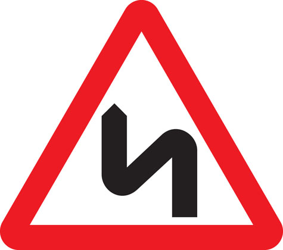
4․ Երեխաների կազմակերպված խմբեր փոխադրող տրանսպորտային միջոցների երթևեկությունը թույլատրվում է՝
5․ Տրանսպորտային միջոցների երթևեկությունը բնակավայրերում թույլատրվում է՝
6․ Ո՞ր ուղղությամբ է թույլատրվում երթևեկությունը։
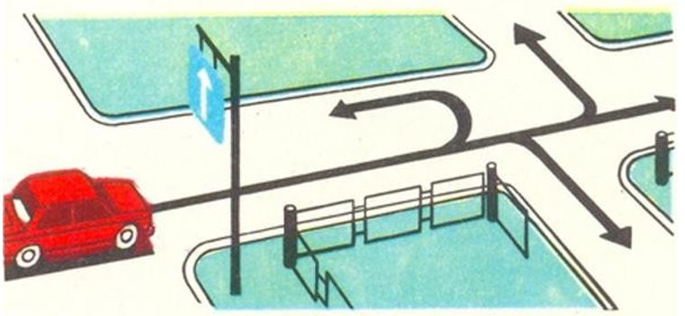
7․ Միջքաղաքային ավտոբուսների երթևեկությունը բնակավայրերից դուրս թույլատրվում է՝
8․ Ի՞նչ արագությամբ է թույլատրվում երթևեկել 3.5 տ ոչ ավելի թույլատրելի առավելագույն զանգված ունեցող բեռնատար ավտոմոբիլներով՝ բնակավայրերից դուրս։
9․ Թույլատրվու՞մ է արդյոք մերձքաղաքային, միջմարզային և միջքաղաքային ավտոբուսների վարորդներին բնակավայրերում գերազանցել 60 կմ/ժ արագությունը։
10․ Թույլատրվու՞մ է արդյոք միջքաղաքային ավտոբուսի վարորդին բնակավայրերից դուրս գերազանցել 70 կմ/ժ արագությունը։
11․ Քարշակման ժամանակ վթարային լուսային ազդանշանի բացակայության կամ անսարքության դեպքում, «Վթարային կանգառ» նշանը տեղադրվում է՝
12․ Կոշտ կցիչով քարշակման ժամանակ տրանսպորտային միջոցների միջև հեռավորությունը չպետք է գերազանցի՝
13․ Թույլատրվու՞մ է արդյոք կոշտ կամ ճկուն կցիչով քարշակման ժամանակ մարդկանց փոխադրումը բեռնատար ավտոմոբիլի թափքում՝
14․ Կոշտ կամ ճկուն կցիչով քարշակման ժամանակ նշվածներից ո՞ր դեպքում է թույլատրվում մարդկանց փոխադրումը քարշակվող ավտոմոբիլում։
15․ Ի՞նչ առավելագույն արագությամբ է թույլատրվում երթևեկությունը՝ մեխանիկական տրանսպորտային միջոցներով քարշակում կատարելիս։
16․ Քարշակումը մերկասառույցի պայմաններում արգելվում է՝
17․ Ինչպիսի՞ առավելագույն արագությամբ կարող է իրականացվել քարշակումը տվյալ պայմաններում։
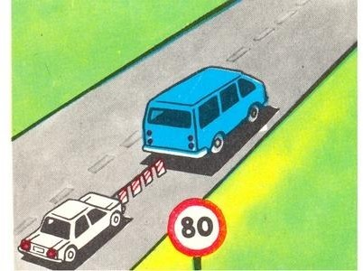
18․ Թույլատրվու՞մ է արդյոք ճկուն կամ կոշտ կցիչով քարշակման դեպքում մարդկանց փոխադրումը քարշակվող մեխանիկական տրանսպորտային միջոցում։
19․ Քարշակումը մերկասառույցի պայմաններում՝
20․ Ինչպիսի՞ առավելագույն արագությամբ է թույլատրվում տրանսպորտային միջոցների քարշակումը ճկուն կցիչով։
21․ Ո՞ր դեպքում է արգելվում քարշակումը։
22․ Բնակավայրերից դուրս մեխանիկական տրանսպորտային միջոցներ քարշակելիս երթևեկության արագությունը չպետք է գերազանցի՝
23․ Թույլատրվու՞մ է արդյոք մոտոցիկլների քարշակումը։
24․ Քարշարկման ժամանակ տրանսպորտային միջոցների միջև ի՞նչ հեռավորություն պետք է ապահովի ճկուն կցիչը։
25․ Ի՞նչ առավելագույն արագությամբ է թույլատրվում կցորդ քարշակող թեթև մարդատար ավտոմոբիլների երթևեկությունն ավտոմայրուղիներով երթևեկելիս։
26․ Կոշտ կցիչով քարշակման ժամանակ հեռավորությունը տրանսպորտային միջոցների միջև պետք է լինի ոչ ավելի՝
27․ Մեխանիկական տրանսպորտային միջոցների մասնակի բեռնումով քարշակման ժամանակ ուղևորների փոխադրում թույլատրվում է՝
28․ Թույլատրվու՞մ է արդյոք քարշակել կողային կցորդով մոտոցիկլները։
29․ Ի՞նչ առավելագույն արագությամբ է թույլատրվում երթևեկությունը ճկուն կցիչով քարշակելիս։
30․ Տրանսպորտային միջոցի վրա բեռը տեղաբաշխվում և անհրաժեշտության դեպքում նաև ամրացվում է այնպես, որպեսզի`
31․ Թեթև մարդատար ավտոմոբիլի առջևի նստատեղին, եթե այն կահավորված չէ երեխաներին պահող հարմարանքով, թույլատրվում է փոխադրել երեխաներ, եթե լրացել է նրանց՝
32․ Թույլատրվու՞մ է արդյոք մարդկանց փոխադրումը բեռնատար կցորդում։
33․ Թույլատրվու՞մ է արդյոք մինչև 12 տարեկան երեխաների փոխադրումը մոտոցիկլի հետևի նստատեղին։
34․ Թույլատրվու՞մ է արդյոք երթևեկության ժամանակ մարդկանց գտնվելը բեռնատար ավտոմոբիլի թափքում, եթե այն կահավորված չէ մարդկանց փոխադրելու համար։
35․ Մարդկանց փոխադրումը բեռնատար կցորդում՝
36․ Կոշտ կամ ճկուն կցիչով քարշակման ժամանակ թույլատրվու՞մ է արդյոք մարդկանց փոխադրումը քարշակվող ավտոբուսում։
37․ Ավտոբուսի քարշակումը մերկասառույցի պայմաններում արգելվում է՝
38․ Թույլատրվու՞մ է արդյոք ճկուն կամ կոշտ կցիչով քարշակման դեպքում մարդկանց փոխադրումը քարշակվող մեխանիկական տրանսպորտային միջոցում։
39․ Մարդկանց փոխադրումն արգելվում է, եթե`
40․ Ավտոբուսով երեխաների կազմակերպված խմբեր փոխադրելիս սրահում պետք է գտնվի առնվազն`
41․ Ի՞նչ առավելագույն արագությամբ է թույլատրվում երթևեկել միջմարզային և միջքաղաքային ուղևորափոխադրումներ իրականացնող ավտոբուսներին` բնակավայրերից դուրս բոլոր ճանապարհներին։
42․ Թույլատրվու՞մ է արդյոք ավտոբուսներին բնակավայրերից դուրս երթևեկել 70 կմ/ժ արագությամբ։
43․ Միջքաղաքային փոխադրումներ իրականացնող ավտոբուսների երթևեկությունը բնակավայրերում թույլատրվում է ոչ ավելի քան`
44․ Ի՞նչ առավելագույն արագությամբ է թույլատրվում միջքաղաքային փոխադրումներ իրականացնող ավտոբուսների երթևեկությունը բնակավայրերից դուրս`
45․ Ի՞նչ առավելագույն արագությամբ է թույլատրվում ավտոբուսների երթևեկությունը «Բնակելի գոտի» և «Բնակելի գոտու վերջը» նշաններով կահավորված տարածքներում։
46․ Թույլատրվու՞մ է արդյոք կոշտ կամ ճկուն կցիչով քարշակման ժամանակ մարդկանց փոխադրումը քարշակվող ավտոբուսում։
47․ Կահավորված թափքում մարդկանց փոխադրելու դեպքում բեռնատար ավտոմոբիլի վարորդը պարտավոր է երթևեկել ոչ ավելի քան`
48․ Թույլատրվու՞մ է արդյոք ուղևորների փոխադրումը քարշակող ավտոբուսում։
49․ Այս նշանի առկայության դեպքում ի՞նչ առավելագույն արագությամբ երթևեկելու իրավունք ունեն միջքաղաքային ավտոբուսների վարորդները։
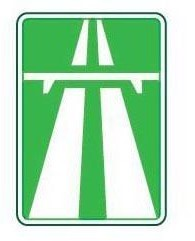
50․ Ի՞նչ առավելագույն արագությամբ կարող է երթևեկել քարշակող ավտոբուսի վարորդը տվյալ իրավիճակում։
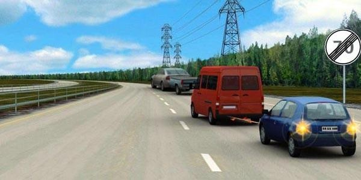
51․ Ի՞նչ առավելագույն արագությամբ կարող է երթևեկել միջքաղաքային ավտոբուսի վարորդը տվյալ իրավիճակում։
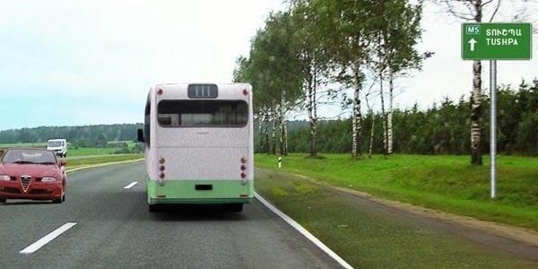
52․ Ի՞նչ արագությամբ կարող է շարունակել երթևեկությունը ավտոբուսի վարորդը տվյալ ճանապարհային նշանով նշված գոտում։
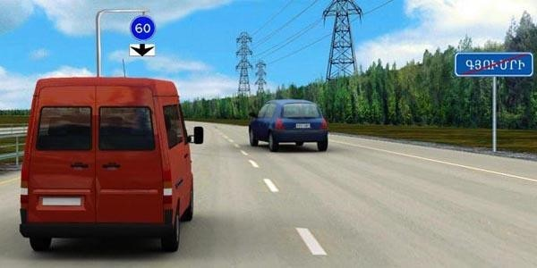
53․ Այս նշանով կահավորված ճանապարհներին միջքաղաքային ավտոբուսների վարորդներն իրավունք ունեն երթևեկելու ոչ ավելի քան`
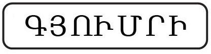
54․ Այս նշանով կահավորված ճանապարհներին միջքաղաքային ավտոբուսների վարորդներն իրավունք ունեն երթևեկելու ոչ ավել քան`
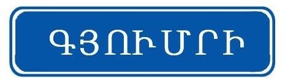
55․ Թույլատրվու՞մ է ուղևորների փոխադրումը ավտոբուսի սրահում տվյալ իրավիճակում։
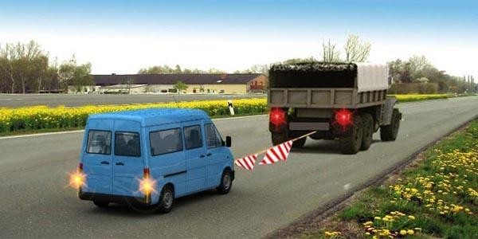
56․ Կոշտ կամ ճկուն կցիչով քարշակման ժամանակ թույլատրվու՞մ է արդյոք ուղևորների փոխադրումը քարշակվող ավտոբուսում։
57․ Քարշակման ժամանակ քարշակվող տրանսպորտային միջոցի վրա պետք է միացված լինեն`
58․ Ի՞նչ առավելագույն արագությամբ է թույլատրվում միջքաղաքային ավտոբուսների երթևեկությունն ավտոմայրուղիներով։
59․ Ի՞նչ առավելագույն արագությամբ է թույլատրվում ավտոբուսի երթևեկությունը այս ճանապարհային նշանի ազդեցության ճանապարհահատվածներում։

60․ Ի՞նչ արագությամբ է թույլատրվում տրանսպորտային միջոցների երթևեկությունը «Բնակելի գոտի» և «Բնակելի գոտու վերջ» ճանապարհային նշանների ազդեցության տարածքներում։
61․ Ի՞նչ առավելագույն արագությամբ է թույլատրվում թեթև մարդատար ավտոմոբիլների երթևեկությունը այս ճանապարհային նշանի ազդեցության ճանապարհահատվածներում։
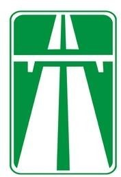
62․ Ի՞նչ առավելագույն արագությամբ է թույլատրված երթևեկությունը 3,5 տոննայից ոչ ավել թույլատրելի առավելագույն զանգվածով բեռնատարի վարորդին նշված նշանների ազդման գոտում:
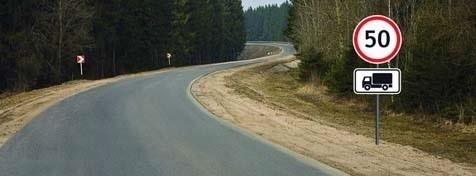
63․ Մեխանիկական տրանսպորտային միջոց քարշակելիս այս ճանապարհի ո՞ր գոտով կարող եք շարունակել երթևեկությունը
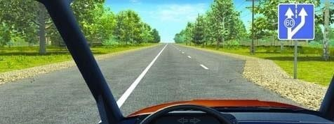